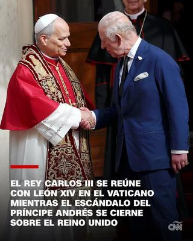

La visita a la «Santa Sede» de Carlos III, monarca del Reino Unido, el pasado jueves 23 de octubre de 2025, fue presentada al público por los medios de comunicación como un acto histórico, y hasta como un símbolo de reconciliación entre dos grandes ramas del cristianismo: católicos y anglicanos. Es la «primera vez que un monarca británico reza con un papa en 500 años», dijo la prensa. Y es que se trata de la primera vez en casi cinco siglos, desde 1534 en que Enrique VIII separó a la Iglesia de Inglaterra de la Iglesia de Roma, que ambos jefes eclesiásticos se reúnen para participar conjuntamente en un servicio religioso, el cual combina además elementos de protocolo diplomático de jefes de estado.


Sin embargo, tras el pomposo ceremonial, que incluyó tronos y proclamas, se filtró un aroma —difícil de disimular— de hipocresía institucional y de alianzas estratégicas. Y es justo ese aroma el que importa, porque revela los mecanismos de poder.
Según se dio a conocer, el rey Carlos III y la reina Camila llegaron al Vaticano el pasado jueves para un encuentro con el papa León XIV. Y en la icónica Capilla Sixtina, bajo los famosos frescos de Miguel Ángel, tuvo lugar un servicio ecuménico especial —según se dice, «el primero desde al menos la Reforma», en el que un monarca británico reza junto a un papa. ¡Vaya grandioso hito para la humanidad!
Pero no sólo esto, se informa que el papa aprobó además que el rey británico sea de ahora en adelante un «Cofrade Real de San Pablo», y encargó la fabricación de una silla especial a modo de trono, con el escudo del rey y el lema latino Ut unum sint («Que sean uno»), que permanecerá en la basílica. Mientras que Carlos III nombró al papa «Cofrade papal de la Capilla de San Jorge del Castillo de Windsor» y «Caballero de la Gran Cruz de la Orden del Baño». (Por favor, no reírse, que esto es algo serio y trascendental).
Es decir, todo fue preparado como una gran producción simbólica de reconciliación, fraternidad, unidad… un espectáculo de solemnidad. Pero ¿unidad de qué? ¿Y a qué precio? —Y es aquí es donde cualquier analista crítico debe levantar la ceja y preguntar: ¿qué tan consistentes son esos gestos con la realidad de poder, con las trayectorias institucionales de quienes los protagonizan, con las noticias que simultáneamente se produjeron acerca de esos mismos protagonistas?
Veamos cada caso:
1) El monarca, la corona británica y la moral - —————————————————-
El papel del rey Carlos III como cabeza de la iglesia anglicana —y por tanto como máxima autoridad de una institución religiosa— no lo exime de su propia historia personal y de la de su círculo inmediato. Si bien él no está directamente implicado en el escándalo que afecta a su hermano, es inevitable que éste lo salpique. Hablamos del príncipe Andrés, duque de York, cuya asociación con Jeffrey Epstein, el financiero convicto por delitos s3xuales, ha sido objeto de escrutinio.
El príncipe Andrés llegó a un acuerdo extrajudicial en 2022 con una de las principales acusadoras (Virginia Giuffre) de haber sufrido abusos s3xuales facilitados por Epstein. Además, documentos judiciales publicados mostraron que Andrés mantuvo contactos con Epstein por lo menos hasta febrero de 2011, cuando él previamente afirmó que había cortado la relación en 2010. Y pese a ello, la Metropolitan Police Service (Policía Metropolitana del Reino Unido), ha declarado que no abrirá investigación en ausencia de nueva información relevante. En octubre de 2025, Andrés renunció formalmente a usar el título de duque de York y otros honores reales, «porque las continuas acusaciones me distraen del trabajo de Su Majestad y la familia real». ¿Y qué dice esto de la monarquía que presenta al rey como pilar de tradición y moralidad?
Por ahora, las víctimas de Epstein y sus abogados continúan pidiendo mayor transparencia, acceso a documentos completos y rendición de cuentas. En resumen: no existe hoy una acusación criminal vigente en el Reino Unido contra el príncipe Andrés; existe un acuerdo civil; pero existe un escándalo de reputación. Y la institución monárquica —con ella el rey Carlos III— cargan con las consecuencias simbólicas y prácticas.
Por otra parte, tampoco olvidemos que recientemente la Iglesia anglicana nombró por primera vez en el arzobispado de Canterbury a una mujer, Sarah Mullally, después de que el puesto permaneció vacante por casi 12 años, debido a la renuncia obligada del arzobispo Justin Welby, señalado de haber encubierto a John Jackson Smyth, un abogado depredador s3xual vinculado a la Iglesia de Inglaterra.
Y por supuesto, tampoco hay que olvidar que Carlos III, quien encabeza la Iglesia Anglicana, carga con un pasado que no precisamente brilla por su moral ejemplar. Durante su matrimonio con la princesa Diana, su relación extramarital con Camila Parker Bowles fue un secreto a voces en la sociedad británica, y un escándalo mundial cuando salió a la luz. Aquella doble vida, tejida entre la fachada real y la pasión prohibida, contribuyó al derrumbe del matrimonio y a la tragedia emocional de Diana, que terminó convertida en ícono de una víctima del desamor cortesano. La ironía es que hoy Camila, la misma amante que encarnó la infidelidad de entonces, ostenta el título de reina consorte, y acompaña al monarca en una ceremonia religiosa con el Papa, en un ambiente donde suele predicarse el valor de la fidelidad y la virtud.
Pero el trasfondo de esta hipocresía no es nada nuevo. La propia Iglesia Anglicana, que encabeza Carlos III como «Defensor de la Fe», nació precisamente de una infidelidad real. Su antepasado, el rey Enrique VIII, rompió con Roma porque el Papa se negó a concederle el divorcio de Catalina de Aragón, todo para legitimar su deseo de casarse con Ana Bolena. Así pues, la religión anglicana surgió no de un impulso espiritual, sino de una pasión carnal y un acto de rebeldía matrimonial. En tal sentido, el actual monarca británico no hace más que continuar, con su historia personal, la tradición de una iglesia nacida del adulterio y la conveniencia.
2) La iglesia católica, la autoridad eclesiástica y los escándalos - ————————————————————————–
Pero la institución a la que se dirige Carlos III, el Vaticano, es también una institución con una pesada carga ética: múltiples escándalos de p3derastia clerical encubiertos, falta de transparencia ante actos de corrupción, mu3rtes misteriosas, etc. Por tanto, que el Papa apruebe gestos simbólicos con una institución como la corona británica —y que ésta a su vez responda ensalzando al Papa con honores de estado— añade una dimensión de alianza de élites corruptas: «Nosotros, los grandes de la cristiandad, nos situamos juntos», mientras las víctimas esperan justicia y las instituciones claman por reformas.
3) El escenario se oculta bajo un velo de solemnidad - ————————————————————————–
El servicio ecuménico en la Capilla Sixtina, la música del coro, la silla-trono con el escudo: todo fue imagen, ritual, solemnidad. Pero después de la ceremonia las preguntas persisten:
¿Por qué no se da un paso hacia la transparencia de los escándalos de ambas iglesias, o la rendición de cuentas de sus máximos jefes frente a sus redes de poder?
¿Puede tomarse en serio un acto de «unidad espiritual» cuando la institución que lo impulsa tiene escasos gestos de reparación hacia las víctimas de 4buso, y la institución que recibe los honores también?
¿Qué aporta simbólicamente que un monarca británico rece junto a un papa, si los entramados institucionales de ambas partes siguen siendo oscuros y malolientes?
En resumen: que un monarca británico —jefe de una iglesia nacional— viaje al Vaticano, y que se siente con un papa, que rece, firme pactos simbólicos de hermandad, reciba honores mutuos, se encarguen sillas especiales en forma de trono, y se protagonice portadas de periódicos… todo ello puede venderse como «una nueva era de concordia cristiana». Pero si se analiza con una lupa escéptica, encontramos varias contradicciones:
Instituciones que proclaman moral y unidad, pero cuya honestidad está seriamente cuestionada por escándalos previos (p3derast1a, 4bus0, corrupción) y relaciones de poder con redes muy turbias.
Actos simbólicos que no se traducen en reformas sustanciales (por ejemplo, rendición de cuentas, transparencia, empatía real por las víctimas).
Personajes cuya legitimidad moral es debatible (la corona británica con su pasado de adulterio, de privilegios heredados; la iglesia católica con siglos de complicidad institucional), que ahora se pintan de «unidad» y «espiritualidad».
Por tanto, este montaje sólo puede verse como un espectáculo hipócrita de poder revestido de espiritualidad: un rito de legitimación mutua entre dos instituciones que necesitan mostrar confianza, tradición y relevancia —y mientras lo hacen, las preguntas fundamentales quedan en el aire.
Pero la pregunta final a plantear es: ¿Para quién sirve este supuesto acto de reconciliación? ¿Para las instituciones, para la imagen, para la solemnidad? ¿O sirve en algo real a las víctimas, a la transparencia, al cambio institucional? Hasta que no se vea que esos ritos simbólicos vayan acompañados de reformas reales, los gestos seguirán siendo elegantes y vistosos, pero vacíos.
El rey Carlos III puede posar con el Papa, disfrutar honores, recibir tronos y entregar títulos. Pero la corona no puede lavar con incienso las manchas de la historia, ni el Vaticano puede redimir su pasado exclusivamente con oraciones. Porque el poder necesita menos besamanos y más rendición de cuentas.
[Crédito de imagen: CNN en Español]
Referencias - ——————————
https://cnnespanol.cnn.com/2025/10/23/mundo/rey-carlos-papa-leon-vaticano-principe-andres-trax
https://apnews.com/article/prince-andrew-titles-duke-york-151c42ac608d864d94dfa233abfa04a8
https://apnews.com/article/prince-andrew-titles-duke-york-151c42ac608d864d94dfa233abfa04a8
https://britbrief.co.uk/politics/scandals/epstein-victims-demand-prince-andrew-document-release.html
Comentarios
Comments powered by Disqus